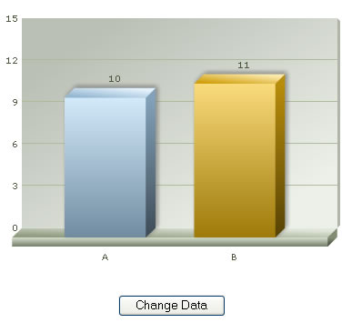
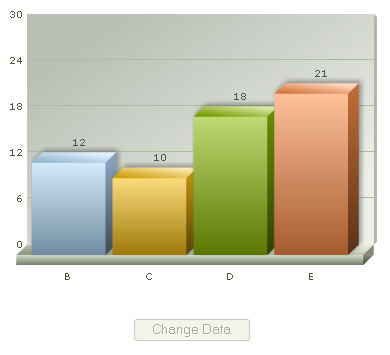

| FusionCharts, JavaScript and setDataXML Method |
You can change the data of a chart at client side using the setDataXML method of chart. Consider the following code contained in ChangeDataXML.html: Code examples discussed in this section are present in Download Package > Code > JavaScript > Basics folder.
|
| <HTML> <HEAD> <TITLE>FusionCharts & JavaScript - Updating chart using setDataXML() Method</TITLE> <SCRIPT LANGUAGE="Javascript" SRC="../../FusionCharts/FusionCharts.js"></SCRIPT> <SCRIPT LANGUAGE="JavaScript"> //updateChart method is called whenever the user clicks the button to //update the chart. Here, we get a reference to the chart and update it's //data using setDataXML method. function updateChart(DOMId){ //Get reference to chart object using Dom ID var chartObj = getChartFromId("chart1Id"); //Update it's XML chartObj.setDataXML("<chart><set label='B' value='12' /><set label='C' value='10' /><set label='D' value='18' /><set label='E' value='21' /></chart>"); //Disable the button this.document.frmUpdate.btnUpdate.disabled = true; } </SCRIPT> </HEAD> <BODY> <div id="chart1div"> FusionCharts </div> <script language="JavaScript"> var chart1 = new FusionCharts("../../FusionCharts/Column3D.swf", "chart1Id", "400", "300", "0", "1"); chart1.setDataXML("<chart><set label='A' value='10' /><set label='B' value='11' /></chart>"); chart1.render("chart1div"); </script> <form name='frmUpdate'> <input type='button' value='Change Data' onClick='javaScript:updateChart();' name='btnUpdate'> </form> </HTML> |
In the above code, we're first creating a Column 3D chart with DOM Id as chart1Id. We also register it with JavaScript. We initially provide the following data to the chart and ask it to render: <chart><set label='A' value='10' /><set label='B' value='11' /></chart> Thereafter, we're creating a button, which when clicked would update the chart with new XML data. The button calls the updateChart() JavaScript function when clicked. The updateChart() JavaScript function has the following code to update the chart: |
| function updateChart(DOMId){ //Get reference to chart object using Dom ID var chartObj = getChartFromId("chart1Id"); //Update it's XML chartObj.setDataXML("<chart><set label='B' value='12' /><set label='C' value='10' /><set label='D' value='18' /><set label='E' value='21' /></chart>"); //Disable the button this.document.frmUpdate.btnUpdate.disabled = true; } |
Here, we first get a reference to the chart using its DOM Id. We use the getChartFromId() JavaScript function to get the reference. If you've your chart objects inside <FORM> elements, you CANNOT use getChartFromId() method to get a reference to the chart, as the DOM Hierarchy of the chart object has changed. You'll get a JavaScript "<<ChartId>> is undefined" error. In these cases, you'll manually need to get a reference to the chart object. Or, you can opt to place the chart object outside <FORM> element. Once we've got the reference, we simply call setDataXML method and pass the new XML data to this function. This method forces the chart to read the new XML data and redraw accordingly. Finally, we disable the button, as it has already been clicked once. When you now view this page, you'll first see a Column Chart with 2 columns as under: |
|  |
| When you click on the button, you'll get the following chart, and also the button is now disabled: |
|  |
The entire thing happens at client side, without any page refreshes or calls to server. Next, we'll see how to update the data of a chart from a given URL, instead of XML. |